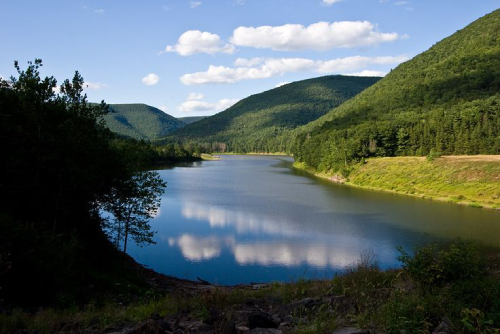
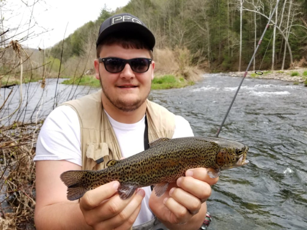

Here at Little Pine State Park this is about an hour away from Williamsport which is located in Jersey Shore which is a neighboring city, the land here at the park spans over 2,158 acres and is surrounded
by multiple mountains in theiir Tiadaghton forest.
Here at the state park it is open to the public 24/7 365 days of the year from sunrise to sunset, and features multiple activities for every age. Here at their little lake they are also known for the first day
of trout that happens every spring to where there are multiple locations taht you can go to. to catch and release whether on foot or by boat.
On top of fishing they are also open to hiking, camping, sight seeing, picnicing, and even wildlife watch and photography. They also house a couple of Bald Eagle nests that you can see through different fishing spots or even
on their different trails.